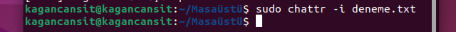

Linux Kavramı ve Temel Linux Terminal Komutları
Temmuz 23, 2022
Merhabalar, son dönemlerde Linux ile yolum kesişti ve yeni yeni öğrenmeye, kavramaya çalışıyorum. Bu sırada çıkardığım ve oluşturduğum notları paylaşmak istedim. Öğrenme aşamasından olduğum için mutlaka hatalarım bulunabilir. Lütfen bana bildirin, beraber düzeltelim. Keyifli okumalar!
Linux Nedir?
İlk olarak Linux bir işletim sistemi değildir. Zaman içerisinde günlük konuşma dilinde “Linux kullanıyorum.” deyiminin fazlaca kullanılması ile birlikte bu şekilde bir söylem yer edinmiştir. Fakat Linux bir işletim sistemi çekirdeğidir. Daha kapsamlı bu konu hakkında bilgi vereceğim. Ama şimdi Linux çekirdeği hakkında biraz tartışalım.
Linux, Unix çekirdeğinin tamamıyla açık kaynak olmaması sebebiyle ona karşı bir atıf olarak ortaya çıkmıştır. Unix çekirdeği herkesin aktif olarak kullanamayacağı ve geliştirmeye açık olmaması üzerine “Linus Tornvalds” ilk başta başka isimler verse de “Linux” ismi ile Unix sistem çekirdeğine karşı kendi çekirdiğini geliştirmiştir. Linux, GNU prensibinin bir ürünüdür. GNU, GNU’s Not Unix kısaltmasıdır.
!Not: Linux Tornvalds, Linux çekirdeğini geliştirirken, proje gerekliliklerini ve gelişimini kontrol edebilmek için GİT sistemini de geliştirmiştir. Doğru okudun! Vazgeçilmezimiz GİT.
“Burada açık kaynak nedir?” gibi soruları bu konu içerisinde derinlemesine dahil etmek istemiyorum. Fakat buradan okuyabilirsiniz.
Kabaca “Açık Kaynak Yazılım”, geliştirilmekte olan veya yeni başlayan bir yazılım içeriğinin herkesin erişimine açılarak doğrudan katkıda bulunabileceği, ücretsiz olarak kullanabileceği bir yazılım felsefesi denebilir.
Linux Çekirdeğinin İşlevi Nedir?
Linux çekirdeği donanım ile işletim sistemi arasında bir köprü görevi görür. Linux çekirdeğine sahip olan ve üzerine görsel arayüz, işlev ve paketler oluşturularak kullanıma sunulan işletim sistemleri paketleri Linux çekirdeği sayesinde basitçe donanıma emir verir, yönetir. Bu çekirdeğin üzerine inşa edilmiş olan ve işletim sistemi olarak kullanılan yazılımlara “Linux Dağıtımı” adı verilir.
Peki Biz İşletim Sistemi Olarak Neyi Kullanıyoruz? / Linux Dağıtımları
Linux çekirdeği üzerine amaca uygun bir biçimde özelleştirme, arayüz, yazılım paketleri eklenerek son kullanıcıya sunulan yazılım ürünlerine “Linux Dağıtımı” adı verilir.
Hatta sizler de açık kaynak olarak yayınlanan Linux çekirdeğini baz alarak kendi işletim sisteminizi oluşturabilirsiniz. Fakat bu düzeyde bir bilgi birikimi ve geliştirme herkes tarafından yapılamayacağı için birçok paket yapısına sahip, dağıtıcılar aracılığıyla oluşturulmuş Linux dağıtımları bulunur. Bu durum sizlere istediğiniz gibi işe göre çeşitlilik, performans ve alana özgü özelleştirme sunar.
Birçok Linux dağıtımı içerisinde dpkg (Debian Package Management System), rpm (Red Hat Package Manager) ve packman gibi paket yöneticileri bulunur.
Çok fazla sizleri de sıkmadan kısaca tanımlamak gerekirse “Linux çekirdiği ve belirli paket yöneticisi üzerine arayüzler, çeşitli gündelik araçlar eklenerek ve yazılımsal düzenleme yapılarak sunulan Linux dağıtımları bizlerin işletim sistemi olarak kullanıdığı yazılımlardır.” Örneğin Arch, Kali, Ubuntu, Mint gibi.
“GNU/Linux dağıtımı(kısaca dağıtım); Linux çekirdeği , GNU araçları ve bir masaüstü ortamının bir araya gelmesiyle, bu birlikteliği sürdürülebilir şekilde yönetecek bir yapılandırma araçları seti, yazılım güncelleme araçları vb. ile oluşturularak tam teşekküllü bir işletim sistemi haline gelen uygulamalar bütününü ifade eder.”
Kaynak: Linux dağıtımı — Vikipedi (wikipedia.org)
Linux’a dair daha kapsamlı ve iyi bilgi almak için en aşağıdaki kısmında yer alan kaynakları inceleyebilirsiniz.
Terminal Nedir?
Terminal kısaca kullanıcıların belirli komutlar aracılığıyla işletim sistemine emir vermelerini, programlarını yönetmelerini sağlayan komut ekranıdır.
Temel Linux Terminal Komutları
Yardım Dokümantasyonu
man man: Temel kullanıcı el kitapçığını açar.

Burada bulunan “man” komutu herhangi bir merak edilen komut için arama yapmak amacıyla kullanılabilir. Örnek vermek gerekirse ping komutu hakkındaa çıklayıcı bilgi almak için “man ping” komut satırına yazılabilir. Çıkan ek ekran içerisinde ping komutunu açılımı ve ek özellikleri bulunur. Bilgilendirme ekranından çıkış yapmak için “q” tuşuna basılması yeterlidir.
Genel ve Terminale Dair
clear: Terminal ekranını temizler.
pwd: (print name of current/working directory) Bulunduğumuz komut satırını döndürür.
echo / printf: Temel olarak terminal ekranına istenilen bilgileri çıktı olarak gönderir.
yes: while(1) gibi düşünülebilir. Girilen parametreyi sonlandırana kadar düzenli olarak console’a basar.
seq: Parametre olarak verilen sayı değerine kadar console ekranına yazdırır.
head / tall: Dosyaya dair ilk veya son on içeriği listele. Örnek: İçerisine 1'den 12'ye kadar yazılmış .txt dosyasının head ile yazdırılması.
history: Terminal üzerinde girilen komutların geçmişini gösterir.
free: RAM kullanımı için boş alan bilgilerini döndürür.
ls (list directory contents): Bulunduğumuz komut satırı içerisinde var olan tüm dosya içeriklerini listeler.
ls -l: Bulunan dizin içerisinde yetkileri görüntüler. “-l” parameterisinin ardına dosya ismini parametre olarak vererek sadece belirlenen dosya yetkilerine de bakılabilir.
ls --color: Komutu listelenen içeriklerin biçimi ve executable olmasına göre renklendirme sağlar. Yukarıdaki görselde bu durumda gösteriliyor. “denemeDosya” mavi olmasının sebebi onun bir dizin/klasör olmasından kaynaklanıyor.
ls -all: Tüm içerikleri yetkileri ve ek özellikleri ile listeler. Burada “..” bir üst dizini, “.” ise bulunduğunuz dizini gösteren bir pointer’dır.
ls -ah: Dizin içerisinde gizli dosyaları gösterir. Bunun içinde örnek yukarıdaki görsel içerisinde yer almaktadır. Normalde dizin içerisinde bizler “.” ve “..” ikilisini göremeyiz.
Dosya İşlemleri
cd (Change Directory): Herhangi bir dizine gitmek veya dizinden çıkmak için kullanılabilir. Örneğin açılan terminal içerisinde “cd Desktop” masaüstü dizinine ulaşmamızı sağlar.
cd: Home komutu olan ilk terminal dizinine döndürür. Yukarıdaki görselde gördüğümüz ilk duruma geri dönmüş oluruz. Mavi ile gösterilen masaüstü dizini içerisinde daha önce yer aldığımız (üstü satır) home konumuna geri döneriz.
cd ..: Bir üst dizine çıkmamızı sağlar.
cd /: Komutu root dizinine ulaştırır.
mkdir “dosya ismi”|(make directories): Dizin oluşturmamızı sağlar. (Klasör)
rm “dosya_ismi”: Adı verilen dosyanın (txt, pdf) silinmesini sağlar. (Remove) Dosya içerisi doluysa silme işlemi için rm -r “dosya_ismi” parametresi kullanılarak silenebilir. “r” parametresi burada recursive anlamındadır. Alt dizinleri sıralı olarak sil, içeriğin tamımını sil.
rmdir: Boş olarak bulunan klasörü kaldırır.
touch: Herhangi bir dosya oluşturmak amacıyla kullanılabilir. (touch deneme.txt)
cat: Komutu yazdırılabilir içerikleri konsol üzerinde görüntülememizi sağlar. Örneğin yukarıda oluşturulan dosya içerisine herhangi bir değer girip Terminal üzerinde “cat deneme.txt” şeklinde çağrıda bulunduğumuzda içerik console ekranında düzenlenebilir ve bastırılabilir.
less: Cat ile aynı işlevi barındırır. Tek bir sayfa içerisinde görüntülenir.
nl: Numaralandırmış bir şekilde içeriği console üzerinde görüntüler.
cp: Kopyalama işlemi için kullanılır. Örnek; Masaüstünde “deneme.txt” dosyası ve “DenemeKlasörü” adında bir klasörümüz olduğunuz varsayalım. Masaüstü içerisinde aşağıdaki komutu kullandığımızda “deneme.txt” dosyasını al ve “DenemeKlasörü” dizinine kopyala demiş oluyoruz. (Burada daha öncesinde deneme.txt ve DenemeKlasörü oluşturulmuştur.)
mv: Taşıma İşlemi (move). Yukarıdaki örnek ile aynı şekilde kullanılabilir.
find: Arama İşlemi (find -name “dosya ismi”) Örneğin find -name dizinDeneme.txt
! Dosya ismi arama kısmında büyük/küçük harf duyarlılığı vardır. Bunu engellemek için iname kullanılabilir. Bunun yanı sıra dosya ismi sonuna “ * ” karakterinin eklenmesi girilen parametreyi içeren dosyaların görüntülenmesini sağlar.
ln -s: Link oluşturmayı sağlar. Dosyalar arası oluşturulan link, bir dosya değişime uğradığında diğer dosya içeriğinin de güncellenmesini sağlar. Aynı işleve sahip dosyalar arasında aktif olarak kullanılabilir.

shred | (Kelime anlamı = Parçalamak): Dosyayı tanımsız hale getirir. “deneme.txt” içerisinde merhaba yazmasına rağmen “shred deneme.txt” girdisini girdiğimizde dosya şu hale gelir.
basename: Dosya dizin adresi içerisindeki son dizin adresini döndürür. Örneğin “basename /usr/local/” girdisi “local” olarak sonuç verir.

dirname: Dizin adresi içerisinde eğik çizgileri kaldırarak başlangıç dizinini, dosyalarda ise nokta operatörünü döndürür. Örneğin “dirname /Desktop/Egitim_Icerikleri/” girdisi “/Desktop” olarak sonuç verir.
acroread: PDF dosyaları görüntüler.
gv: Postscript yada pdf dosyalarını görüntüle.
xdvi: TeX DVI dosyalarını görüntüle.
Dosya veya Klasör Özelliklerini Görüntüleme
chmod: Dosya yetkilerini düzenlememizi sağlar.
u : Dosya-dizinin sahibi
g : Dosya-dizinin sahibi ile aynı grupta bulunan kullanıcılar
o : Diğer kullanıcılar
a : Herkese açık.
= : Yetki eşitleme
+ : Yetki ekleme
- : Yetki çıkarma
chmod +x “filename”
!ls komut listesinde görüntülenen r/w/x → read/write/execute yetkilerini belirtir. Sırasıyla soldan sağa kullanıcı, grup, kalan kısım yetkileri şeklindedir.

stat “dosya/dizin ismi”: Parametre olarak girilen dosya hakkında oluşturma tarihi, boyut gibi bilgileri döndürür.
wc “dosya/dizin ismi”: Dosya içerisindeki byte sayısı, kelime sayısını ve satır sayısını döner.
du “dosya/dizin ismi”: Parametre olarak verilen dosya veya klasörün diskte tuttuğu yeri döndürür.
file “dosya/dizin ismi”: Dosyanın tipini ve içeriğini tahmin eder. Örnek bir metin dosyası için (file deneme.txt — - deneme.txt:ASCII text) şeklinde çıktı görürülebilir.
chown “dosya/dizin ismi”: Dosya sahibini değiştirebilmeyi sağlar. Aşağıdaki örnekte kendi Ubuntu’mda ek kullanıcı olmadığı için kendi üzerime sahiplik hatadığımda problem olmuyor, fakat yönetici (root)’a atadığımda hata alıyorum.
chgrp “dosya/dizin ismi”: Dosyanın grup adını değiştirir. Yukarıdaki mantık ile aynı şekilde kullanabilirsiniz.
umask “dosya/dizin ismi”: Chmod’a benzer olarak izin kümeleri atamak için kullanılır. Genel olarak bir terminal üzerinde hazır chmod ayarı oluşturmaya yarar.
chattr +i “dosya/dizin ismi”: Bir dosyayı düzenlemeye karşı korumaya alır ve değiştirilemez, silenemez olmasını sağlar. Eski haline gelebilmesi için i paramatresini çarpan değerini “-” yapmamız yeterlidir.

lasttr “dosya/dizin ismi”: Dizinlerin genişletilmiş özniteliklerini listeleyin.
Metin Editörleri ve Dosya Düzenleme
[komut] [dosya_ismi.uzantısı] -- Örn: vim deneme.txt
emacs / vim: Genel metin editörleri
soffice: Word, Excel editleme.
ablworld: Microsoft Word documents editleme.
gnumeric: Excel dosyalarını editleme.
grep: Yazılı dosya içerisinde değer arama ve bulma gerçekleştirir. Örneğin içerisinde “Merhabalar” yazan bir deneme.txt dosyamız bulunsun. (grep Merha deneme.txt) girdisi bizlere deneme.txt dosyası içerisinde Merha girdisini arar ve console üzerinde Merha kırmızı olacak şekilde döndürür → Merhabalar
!Büyük küçük harf ayrımına duyarlıdır. “merha” şeklinde bir aramada dönüt vermez.
cut: Yazılı dosya içerisinden bir kesit almamızı sağlar. Yukarıdaki örneği aynı şekilde baz alırsak (cut -c 1–5 deneme.txt) girdisi sonucu olarak “Merh” dönüşünü verir.
paste “dosya1” “dosya2”: İki dosya içeriğini bir arada ekrana basar.
sort “dosya_ismi”: Sıralama yapılmasını sağlar. Txt içerisindeki satırlar arası harf sıralaması döndürür.
tr: Dosya içerisinde harf değişikliği yapmamızı sağlar. (Change to) Örn: Deneme → tr D E → Eeneme
uniq: Tekrar eden içerikleri elememizi ve metin dosyası içerisinde sıralama yapma gibi ek işlevleri sağlar.
tee: Okuduğu dosya içeriğini birden fazla alan içerisine yazmayı sağlar.
Sıkıştırma ve Paketleme
tar: Birden çok dosyayı bir dosya içerisine paketler.
gzip / gunzip: GNU Zip sıkıştırma ve çözümleme işlemleri.
bzip2 / buznip2: BZip sıkıştırma ve çözme.
compress / uncompress: Genel Unix’e dayalı olarak sıkıştırma ve çözümleme.
zip / unzip: Win. format sıkıştırma ve çözümleme.
Kıyaslama İşlemi İçin
meld “filename1” “filename2”: İki dosya arasındaki farkları görüntülememizi sağlar.
diff “filename1” “filename2”: İki dosya arasındaki farkı meld’e göre daha basit ve console üzerinde gösterir. Meld ile aynı şekilde kullanılabilir. Fakat meld gibi ayrı bir ekran içerisinde açılmaz ve kullanımı zordur.
comm “filename1” “filename2”: İki dosya içeriğini satır satır kıyaslar.
md5sum “filename1” “filename2”: MD5 ile iki dosya arasında sağlama toplamı yapılması.
Process Yönetimi
pstree: Process’leri hiyerarşik görmemizi sağlar.
top: Çalışmakta olan uygulama ve hizmetleri listeler.
htop: Top verilerini console üzerinde grafiksel, renkli bir biçimde sunar. Genel kullanıma uygun ve kapsamlı filtreleme vb. işlevleri içerisinde barındırır. İlk kurulumda yüklü gelmemektedir. “sudo apt install htop” komutu ile kolaylıklarla kurabilirsiniz.
gnome-system-monitor: Grafiksel olarak görev yöneticisine benzer bir yapıyı çağırır. Console üzerinde çalışmaz.

ps / ps aux: Process’lerin tamamını listeler. Sadece ps kullanıcı için geçerli, aux eklenirse tüm sistem içi geçerli.
ps aux | grep ‘process_ismi’: Özellikle bir process seçimi için kullanılabilir. Grep burada içerisinde geçen işlevi ile arama yapmak amacıyla kullanılır.
kill -p ‘pid_degeri’ / killall: Komutu ile process id’si verilen komut sonlandırılabilir.
Process İş Önceliklendirmeleri
nice / renice: Belirli bir öncelik de program çağırmayı sağlar. 20’değerine kadar
önceliklendirme bulunur. renice mevut önceliklendirmeyi
değiştirir. Cpu’da bulunan işlem sırasına etki eder.
cpulimit: İşlemci kullanımı için sınırlama koyabilmemizi sağlar.
sleep: Process’i verilen parametre doğrultusunda uykuya alarak bekletir. (sleep 1h; mail
-s “Bartu'yu ara!” ben@mailadresim.com)
watch: Belirli aralıklarla bir program çalıştırılmasını sağlar. -d parametresi ile ilk
çıktı ile son çıktı arasındaki farkı görüntüler.
at: Gelecekte program çalıştırmak amacıyla kullanılır.
İş Başlatma, Durdurma
jobs: İşleri listeler. Bu komut yalnızca csh, bash, tcsh ve ksh kabuklarında mevcuttur.
&: Operatörü işin arkaplanda koşulmasını sağlar.
bg “jod id/name”: İşin arkaplanda koşmasını sağlar, fakat bu sırada herhangi bir terminal vb. emir almaz.
fg “job id/name”: İşin önyüz üzerinde koşulmasını sağlar.
suspend: Kabuğu ve terminali askıya alır. Birnevi not defteri işlevine bürünür.
Uygulama İşlemleri
sudo: ! Ubuntu root (kök / yönetici) kullanıcısını aktif kullanıma izin vermemektedir. Root kullanıcısının yetkileri işlemleri gerçekleştirmek için “sudo” komutu kullanılmalıdır.
sudo apt install ‘uygulama_ismi’: Herhangi bir uygulamayı terminal aracılığıyla kurabilemek için kullanım biçimidir. “apt” debian sistemler için geçerli paket yöneticisidir.
Örn; sudo apt install tasksel
apt komutu için birçok ek işlev bulunur. Bazılarını sıralamak istersek;
update (”sudo apt update netbeans”)
upgrade
full-upgrade
install, remove, purge
apt-get clean: Kurmak üzere indirilmiş olan paketleri siler.
apt-get autoclean: Eski sürüm arşiv paketlerini kaldırır.
apt-get dist-upgrade: Komutu ise apt-get upgradekomutundan farklı olarak sadece güncelleme
yapmakla kalmaz, sistemimizdeki gereksiz paketleri de siler.
apt-get autoremove: Komutu ise silmiş olduğumuz uygulamadan geriye kalan ve artık ihtiyaç
duyulmayan bağımlılıkları kaldırmamızı sağlıyor.
sudo apt install tasksel
sudo tasksel
Yukarıda yer alan komutlar tasksel içeriğini kurmanızı ve bunun üzerinden var olan Linux kurulumunuzu işinize özgü özelleştirmenizi sağlar. (DNS Sunucu, Mail Sunucu ..) Bu yol ile oluşan içeriğe özgü paketleri yükler.
Ağ ve Sağlayıcı Komutları
uname: Sistem bilgisini döner. (Linux / Win)
hostname: System hesap sahibi ismini döner.
ifconfig: Sistemde bulunan ağ bağlantı ve IP yapılandırması ayarlarını inceleyip değiştirmemize olanak tanır.
ping: Hedef ile bizim sistemimiz arasında iletişimin sağlanıp sağlanmadığını kontrol ederek hedef sunucunun çalışıp çalışmadığını veya aktarım hızının ne kadar olduğunu öğrenmemizi sağlar. (ping google.com)
host: Hedef adres hakkında bilgi almanızı sağlar. Host komutu ile IP adresinden alan adı(domain name) ve alan adından(domain name) IP adresine ulaşabiliriz. (host www.outlook.com)
whois: Domain’e dair bilgileri döndürür. (whois www.medium.com)
route / route -n: Ip yönlendirme tablosunu görüntüler.
traceroute: Belirli bir hedefe gönderilen paketin hangi host’lardan geçtiğini bizlere gösterir. (traceroute www.google.com)
dig “bağıntı": DNS kayıtlarına bakmak için kullanımı oldukça kolay olduğundan yaygın olarak kullanılmaktadır.
arp: IP-MAC Adresi eşleştirmelerinin tutulduğu tablolardır.
tcpdump: Sistemimizin yaptığı bağlantıları ve sistemimize yapılan bağlantıları anlık olarak görüntülememize olanak sağla
Ağ Bağlantısı
ssh: SSH (Secure Shell/Güvenli Kabuk) - Ağ üzerinden başka bilgisayara erişim sağlamak, uzak bir bilgisayar da komutlar
çalıştırmak ve bir bilgisayardan diğerine dosya transferi amaçlı geliştirilmiş bir protokoldür.
Güvensiz kanallar(internet vs) üzerinden güvenli haberleşme olanağı sağlar.
Bu SSH komutu 3 farklı kısımdan oluşur:
ssh {user}@{host}
Bu komut içerisinde user genellikle kullanıcıdır(Root olabilir). Host ulaşılmak istenen noktayı simgeler.
Host bir IP adresi (244.235.23.19) veya domain (www.xyzdomain.com) olabilir.
telnet: “Telecommunication Network”. Telnet protokolü (iletişim ağı) ağ üzerindeki çok
kullanıcılı bir makineye (sunucu-server) başka bir makina (pc) kullanarak
bağlanmak ve o makine üzerinde bazı komutları çalıştırmak için kullanılır. Veriler şifrelenmez.
Bundan dolayı güvensiz bir protokoldür. Ağımızı dinlemek isteyen
herhangi biri verilerimizi görebilir. Bundan dolayı SSH bağlantısı kullanılması
önerilir.
telnet sunucu_adi [port numarası/ip]
telnet 127.0.0.1
scp: (Secure Copy — Güvenli Kopyalama). Bir ağdaki iki bilgisayar arasında dosya
kopyalamanızı sağlar. Bağlantı sırasında
SSH kullandığı için dosya aktarımı şifreli ve güvenlidir.
$ scp kopyalacak_dosyanın_adi kopyalanacağı_yer
Eğer karşı bilgisayardan kendi bilgisayarımıza kopyalayacaksak:
$ scp kullanıcı_adı@host_ismi:kopyalacak_dosyanın_adi kopyalanacağı_yer
Kendi bilgisayarımızdan karşı bilgisayara kopyalayacaksak:
$ scp kopyalacak_dosyanın_adi kullanıcı_adı@host_ismi:kopyalanacağı_yer
Uzak bilgisayarlar arası kopyalayacaksak:
$ scp kullanıcı_adı@host_ismi:kopyalacak_dosyanın_adi kullanıcı_adı@host_ismi:kopyalanacağı_yer
sftp: https://www.hostinger.web.tr/rehberler/sftp-nedir-ve-nasil-kullanilir/ (Basit ve Nitelikli Anlatım)
ftp: FTP (File Transfer Protocol — Dosya Aktarma Protokolü) dosyaları Internet’e yollamak ve Internet’ten almak için, kullandığımız protokoldür.
Genel Açma Ve Kapatma İşlemleri
reboot: Yeniden başlatma
shutdown:Bilgisayarı kapanması için planlayıcı oluşturur.
shutdowm -c: Kapama işlemini iptal eder. (Cancel)
shutdown -h down: İşletim sisteminin kapanmasını sağlar. (Halt)
Bu işlemleri için zamanlama yapılabilir.
Kullanıcı İşlemleri
Kullanıcı bilgileri GNU/Linux içerisinde etc dosyası içerisinde yer alır. Bu noktaya cd /etc
kullanılarak ulaşılabilir.
Daha sonra cat passwd denerek kullanıcılara dair bilgiler görüntülenir.
Kısa şekilde cat /etc/passwd olarak da yapılabilir.
ls/home üzerindeki dosyalar da kullanıcı sayısı hakkında bilgi verilebilir.
adduser “kullanıcı_adı”/ useradd: Kullanıcı eklemeye yarar, fakat bu işlem root yetkisi
ile yapılabilir. (sudo)
passwd “kullanıcı_adı”: Komutuyla kullanıcıya dair şifre değiştirilebilir. Root yetkisi
ister. (sudo)
del “kullanıcı_adı” /user del: Kullanıcıyı siler. Root yetkisi ister. (sudo)
su “kullanıcıadı”: İle kullanıcılar arası geçiş yapılabilir. Bu komut sonrası geçilen
kullanıcının şifresini isteyecektir.
Swict user içerisinde kullanıcı hesabından çıkmak için “exit” kullanılır.
usermod / chfn: Hesap bilgi ve içeriklerini modifiye etmeyi sağlar.
chsh: Shell üzerindeki kullanıcıyı değiştirir.
logname: Giriş yapılan kullanıcı ismini döndürür.
finger: Kullanıcı bilgilerine kolonlar halinde döndürür.
whoami / who / users: Aktif olarak giriş yapmış olan kullanıcıyı döndürür.
last: Oturumların kapatılma tarihlerini ve kullanılan kullanıcıları döndürür.
id: Kullanıcının id bilgisini döndürür.
w: Diğer giriş yapmış olan kullanıcıları listeler.
uptime: Login olunduktan sonra geçen süreyi gösterir.
uname -a: Linux dağıtımının ismini döndürür.
! Bu komutların kullanıcı adı belirtilmeden yazılması, var olan kullanıcının bilgileri üzerinde
işlem yapmayı sağlar.
Grup İşlemleri
groups: Grup üyelerini listeler.
groupadd: Grup oluşturur.
groupdel: Grubu siler.
groupmod: Grubu modifiye eder.
Dosya İşlemleri
df: Boş alan ve var olan içerikleri görüntüler.
mount: Sistem içerisindeki erişelebilir tüm dosyaları tek bir ağaç içerisinde döndürür.
Yedek İşlemleri
dump: Aldığı parametreler doğrultusunda yedeklenmesi gereken sistem dosyalarını işaretler.
restore: Dump ile yedeklenmiş noktaya dönmemizi sağlar.
cdrecord: Bir Cd vb. aygıt içerisine yedeği yazar.
rsync “kaynak_dosya” “hedef_dosya”: Uzak veya lokal bir bağlantı içerisinde dosya transferi işlemini gerçekler.
mt: Uzak sürücü kontrolü gerçekler.
Gün ve Zaman
xclock: Ekranda görsel olarak saatin görüntüleceği bir araç çağırır.
cal:Takvimi çağırır.

date:Terminal console’u içerisine var olan tarihi yazar.
ntpdate: Sunucu cihaz saatini internet üzerinden günceller ve doğrular.
fsck: Dosya sistemi içerisinde denetim gerçekleştirir.
sync: Disklerin önbelleklerini sıfırlar.
Mail İşlemleri
thunderbird / evolution / mutt / mail / mailq
Matematiğe Dayalı İşlemler
xcalc / expr / dc
Tarayıcı
lynx “link”: Sadce metin bazlı görüntüleme
wget: Web dosyaları indirmeyi sağlar.
Harf Kontrolleri
spell / aspell: Parametre aldığı girdinin yazım denetimini sağlar.
Yazdırma / Yazıcı İşlemleri
lpr: Parametre olarak belirtilen dosyayı yazdırıcıya iletir.
lpq: Yazıcı kuyruğunda bulunun dosyaları görüntüler.
lprm: Parametre olarak alacağı dosyası yazdırma kuyruğundan siler.
Ubuntu Versiyon Yükseltme
Terminal / Uç birim üzerinden vereceğiniz alttaki komutların kullanılması yükseltilebilir
herhangi bir üst sürüm varsa bizi “güncelleme yöneticisi” yoluyla haberdar edicektir, bu
şekilde Ubuntu’yu oldukça basit bir şekilde sürüm yükseltmesine hazırlamış oluruz.
sudo apt-get update
update-manager -c -d
Burada anlatmış olduğum içerikler ve komutlar elbette bu kadarla sınırlı değil. Birçok araştırma, öğrenme ile aktif olarak kullanmalısız. Fakat bende yeni olduğum için diyebilirim ki bir anda olacak bir şey değil. Zaman içerisinde alışkanlık edinilecek bir durum.
Umarım bu yazı sizlere bir şeyler katmıştır. Bu içeriği oluştururken birçok yeni bilgi öğrendim. Öğrenmeye ve güncellemeye de devam edeceğim. Lütfen hata görürseniz, bana iletin!
Yararlandığım kaynakları aşağıya ekliyorum. Lütfen incelemekten çekinmeyin.
Kaynakça
Wiki-SSHLinux — Vikipedi (wikipedia.org)
Linux Dersleri
Telnet Komutu
What is umask and how to use it effectively
Process Control Commands
Linux#11 Kullanıcı Yönetimi
Rsync Komutu ve Kullanımı
Linux Komutları
En Çok Kullanılan Linux Komutları
gokhansengun | Linux Komut Satırında Hayatta Kalma İpuçları
Yusuf Sezer | Linux Nedir?
Yusuf Sezer | Linux Dağıtımları
Yusuf Sezer | Linux Dersleri
Github Docs Temel Linux